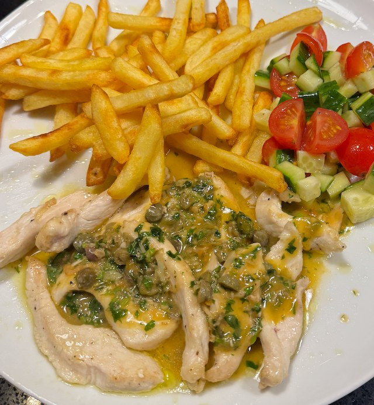

Chicken Piccata

Serves: 2
Cook Time: 45 min
By LemonLush on AllRecipes. Serve with tomato and cucumber salad and chips.
Ingredients
- 2 chicken breasts, cut to strips
- salt and pepper
- flour
- olive oil
- 1 garlic clove, minced
- 1 chicken stock pot
- 200ml water
- ½ lemon, juice
- 2 tbsp capers, chopped
- 25g butter
- small hand-full parsley, finley chopped
Method
Prepare the chicken. Cut into strips, season with salt and pepper, then dust with flour.
Heat pan to hot. Add olive oil, chicken and cook for 3 min. Flip and cook for 3 min more. Remove and keep warm.
Allow pan to cool to medium. Add garlic and fry for 20 seconds. Add water, stock pot, scrape the pan, dissolve the stock cube, and bring to the simmer.
Add lemon juice, capers, butter and whisk to sauce. Add parsley.
Serve.